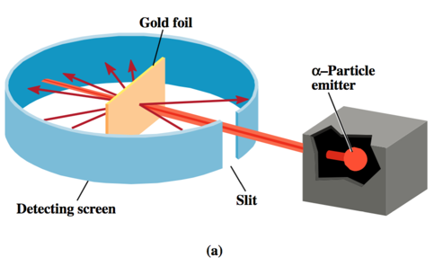

Week 2 - Day 2
Navigate using audio
Quizlet for terms in this lecture
- Audio 0:02:12.490025
- Recitation tonight
- Going over practice problems
- Next Wednesday
- Placement exam
Millikan’s Oil Drop Experiment: The Charge-to-Mass Ratio for an Electron
- Audio 0:03:42.054463
- Using data from
- Millikan’s experiment (–1.60 × 10–19 C/electron);
- Thomson’s mass-to-charge ratio for electrons, it can be deducted that the mass of an electron is as follows:

Radioactivity
- Audio 0:04:08.902546
- Some elements: Uranium, Radium, Thorium emit high energy radiation: alpha, beta, gamma rays
- Gave the basis for what is in atoms
- Audio 0:05:35.336223
- Audio 0:06:11.521979
- Alpha is positively charged

- Audio 0:06:28.313205
- Beta is negatively
- Gamma is neutrally charged

Putting the pieces together:
- Audio 0:07:20.979240
- Beta particles: negatively charged = electrons
- Alpha particles: positively charged Ernest Rutherford showed that these are chemically part of helium atoms
- Audio 0:07:58.216800
- Gamma Rays: like light and X-rays, only more energy
- So where are the Electrons and the Positive Charge in an atom?
- Audio 0:08:27.289910

The Ultimate Undergraduate Research Project
- Audio 0:09:44.109094
- (as carried out by Ernest Marsden under the direction of Johannes Gieger and Ernest Rutherford) Rutherford’s Experimental Design
- Audio 0:10:06.370006
- Audio 0:11:02.745604
- 
Thomson’s Model Predicts:
- Multiple collisions, small deflections
- Rutherford on the large deflections:
- ’.. About as credible as if you had fired a 15- inch [artillery] shell at a piece of paper and it came back and hit you.’
- Audio 0:12:11.955108
- Audio 0:12:34.844121

- Audio 0:12:53.542528
- Audio 0:13:40.032752

- Audio 0:14:53.573853
Ernest Rutherford, Baron Nelson, BSc, DSc, Canterbury College, University of New Zealand
- Audio 0:15:04.348832
Building on the Rutherford Atomic Model: The Nuclear Atom Model
- Audio 0:16:11.946000
- The nuclear theory of the atom has three basic parts
- Most of the atom’s mass and all of its positive charge are contained in a small core called a nucleus.
- Most of the volume of the atom is empty space, throughout which tiny, negatively charged electrons are dispersed.
- There are many negatively charged electrons outside the nucleus as there are positively charged particles (named protons) within the nucleus, so that the atom is electrically neutral.
Protons (and Neutrons)
- Audio 0:17:40.279234
- Had bare proton (nucleus of hydrogen) Charge of alpha particle x 2 proton
- Mass of alpha particle x 4 proton
- So must be something else in the nucleus
- Neutron
Chadwick’s Experiment (1932)
- Audio 0:18:21.136318
The Atom’s Subatomic Particles
- Audio 0:20:04.055851
- All atoms are composed of the same subatomic particles:
- Protons
- Neutrons
- Electrons
- Protons and neutrons have nearly identical masses
- The mass of the proton is 1.67262 * 10^-27 kg
- The mass of the neutron is 1.67493 × 10^–27 kg.
- The mass of the electron is 9.1 × 10^31 kg.
- The charge of the proton and the charge of the electron are equal in magnitude but opposite in sign. The neutron has no charge.
Subatomic Particles
- Audio 0:21:17.788117
Elements: Defined by Their Numbers of Protons
- The most important number to the identity of an atom is the number of protons in its nucleus.
- The number of protons defines the element.
- The number of protons in an atom’s nucleus is its atomic number and is given the symbol Z.
Isotopes: Elements with Varied Number of Neutrons
- Audio 0:24:33.380011
- All atoms of a given element have the same number of protons; however, they do not necessarily have the same number of neutrons.
- Example:
- All neon atoms contain 10 protons, but they may contain 10, 11, or 12 neutrons.
- All three types of neon atoms exist, and each has a slightly different mass.
- Example:
- Atoms with the same number of protons but a different number of neutrons are called isotopes.
Isotopes: Representation
- Audio 0:26:45.772174
- The sum of the number of neutrons and protons in an atom is its mass number and is represented by the symbol A.
- X is the chemical symbol, A is the mass number, and Z is the atomic number.
Isotopes: Representation
- Audio 0:28:13.708943
- A second common notation for isotopes is the chemical symbol (or chemical name) followed by a dash and the mass number of the isotope.
Isotopes: Varied Number of Neutrons
- Audio 0:28:56.545513
- The relative amount of each different isotope in a naturally occurring sample of a given element is roughly constant.
- The percentages are called the natural abundance of the isotopes.
Clicker Question
- Audio 0:32:59.698445
- What is the atomic number (Z), mass number (A), of chlorine with 18 neutrons?
- Z = 17, A = 35 (or 17 + 18)
Ions: Charged Atoms Losing and Gaining Electrons
- Audio 0:34:19.624557
- The number of electrons in a neutral atom is equal to the number of protons in its nucleus (designated by its atomic number Z).
- In chemical changes, however, atoms can lose or gain electrons and become charged particles called ions.
- Positively charged ions are called cations.
- Metal elements, such as Na+, form cations.
- Negatively charged ions are called anions.
- Nonmetal elements, such as F–, form anions.
- Positively charged ions are called cations.
Atomic Mass: The Average Mass of an Element’s Atoms
- Audio 0:36:03.449187
- Atomic mass is sometimes called the atomic weight or standard atomic weight.
- The atomic mass of each element is directly beneath the element’s symbol in the periodic table.
- The atomic mass of an element represents the average mass of the isotopes that compose that element
- It is a weighted value based on the element’s natural abundance of each isotope.
- Audio 0:36:29.805279
Mass Spectrometry: Measuring the Mass of Atoms and Molecules
- The masses of atoms and the percent abundances of isotopes of elements are measured using mass spectrometry—a technique that separates particles according to their mass.
Atomic Mass: Problem
- Naturally occurring chlorine consists of 75.77% chlorine-35 atoms (mass 34.97 amu) and 24.23% chlorine-37 atoms (mass 36.97 amu).
- Calculate chlorine’s atomic mass.
- Audio 0:39:29.943281
- 75.77 % / 100 % * 34.97 amu + 24.23%/100% * 36.97 amu
Vocab
| term | definition |
|---|---|
| atomic number | number of protons in an atom’s nucleus (Z) |
| isotopes | atoms with the same number of protons but a different number of neutrons |
| mass number | the sum of the number of neutrons and protons in an atom |
| natural abundance | the relative amount of each different isotope in a naturally occurring sample of a given element (it is roughly constant) |
| atomic structure | highly condensed mass in nucleus with mostly empty space in electron cloud |
| nucleus | the small core of an atom (contains most of it’s mass and the positive charge) |
| protons | positively charged particles (in the nucleus of an atom) |
| cations | positively charged ions |
| anions | negatively charged ions |
| mass spectrometry | technique that separates particles according to their mass |